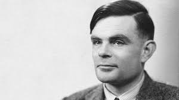

En 1956, el término “inteligencia artificial” fue acuñado formalmente durante la conferencia de Darthmounth, más para entonces ya se había estado trabajando en ello durante cinco años en los cuales se había propuesto muchas definiciones distintas que en ningún caso habían logrado ser aceptadas totalmente por la Página 5 comunidad investigadora. La IA es una de las disciplinas más nuevas junto con la genética moderna.
Las ideas más básicas se remontan a los griegos. Aristóteles (384-322 a. C.) fue el primero en describir un conjunto de reglas que describen una parte del funcionamiento de la mente para obtener conclusiones racionales, y Ctesibio de Alejandría (250 a. C.) construyó la primera máquina auto controlada, un regulador del flujo de agua (racional pero sin razonamiento).
En 1315 Ramon Llull en su libro Ars magna tuvo la idea de que el razonamiento podía ser efectuado de manera artificial.
En 1936 Alan Turing diseña formalmente una Máquina universal que demuestra la viabilidad de un dispositivo físico para implementar cualquier cómputo formalmente definido.
En 1943 Warren McCulloch y Walter Pitts presentaron su modelo de neuronas artificiales, el cual se considera el primer trabajo del campo, aún cuando todavía no existía el término. Los primeros avances importantes comenzaron a principios del año 1950 con el trabajo de Alan Turing, a partir de lo cual la ciencia ha pasado por diversas situaciones. En 1955 Herbert Simon, Allen Newell y J.C. Shaw, desarrollan el primer lenguaje de programación orientado a la resolución de problemas, el IPL-11. Un año más tarde desarrollan el LogicTheorist, el cual era capaz de demostrar teoremas matemáticos. En 1956 fue inventado el término inteligencia artificial por John McCarthy, Marvin Minsky y Claude Shannon en la Conferencia de Dartmouth, un congreso en el que se hicieron previsiones triunfalistas a diez años que jamás se cumplieron, lo que provocó el abandono casi total de las investigaciones durante quince años.
En 1957 Newell y Simon continúan su trabajo con el desarrollo del General Problem Solver (GPS). GPS era un sistema orientado a la resolución de problemas. En 1958 John McCarthy desarrolla en el Instituto de Tecnología de Massachusetts (MIT) el LISP. Su nombre se deriva de LISt Processor. LISP fue el primer lenguaje para procesamiento simbólico.
En 1959 Rosenblatt introduce el Perceptrón.
A finales de los 50 y comienzos de la década del 60 Robert K. Lindsay desarrolla «Sad Sam», un programa para la lectura de oraciones en inglés y la inferencia de conclusiones a partir de su interpretación.
En 1963 Quillian desarrolla las redes semánticas como modelo de representación del conocimiento.
En 1964 Bertrand Raphael construye el sistema SIR (Semantic Information Retrieval) el cual era capaz de inferir conocimiento basado en información que se le suministra. Bobrow desarrolla STUDENT.
A mediados de los años 60, aparecen los sistemas expertos, que predicen la probabilidad de una solución bajo un set de condiciones. Por ejemplo DENDRAL, iniciado en 1965 por Buchanan, Feigenbaum y Lederberg, el primer Sistema Experto, que asistía a químicos en estructuras químicas complejas euclidianas, MACSYMA, que asistía a ingenieros y científicos en la solución de ecuaciones matemáticas complejas. Posteriormente entre los años 1968-1970 Terry Winograd desarrolló el sistema SHRDLU, que permitía interrogar y dar órdenes a un robot que se movía dentro de un mundo de bloques.
En 1968 Minsky publica Semantic Information Processing. En ese mismo año, Seymour Papert, Danny Bobrow y Wally Feurzeig desarrollan el lenguaje de programación LOGO.
En 1969 Alan Kay desarrolla el lenguaje Smalltalk en Xerox PARC y se publica en 1980.
En 1973 Alain Colmenauer y su equipo de investigación en la Universidad de Aix-Marseille crean PROLOG (del francés PROgrammation en LOGique) un lenguaje de programación ampliamente utilizado en IA.Por otro lado, Shank y Abelson desarrollan los guiones, o scripts, pilares de muchas técnicas actuales en Inteligencia Artificial y la informática en general.
En 1974 Edward Shortliffe escribe su tesis con MYCIN, uno de los Sistemas Expertos más conocidos, que asistió a médicos en el diagnóstico y tratamiento de infecciones en la sangre.
En las décadas de 1970 y 1980, creció el uso de sistemas expertos, como MYCIN: R1/XCON, ABRL, PIP… Algunos permanecen hasta hoy (Shells) como EMYCIN, EXPERT, OPSS. En 1981 Kazuhiro Fuchi anuncia el proyecto japonés de la quinta generación de computadoras.
En 1986 McClelland y Rumelhart publican Parallel Distributed Processing (Redes Neuronales). En 1988 se establecen los lenguajes Orientados a Objetos. En 1997 Gari Kaspárov, campeón mundial de ajedrez, pierde ante la computadora autónoma Deep Blue.
En 2006 se celebró el aniversario con el Congreso en español 50 años de Inteligencia Artificial - Campus Multidisciplinar en Percepción e Inteligencia 2006.
En el año 2009 ya hay en desarrollo sistemas inteligentes terapéuticos que permiten detectar emociones para poder interactuar con niños autistas. En el año 2011 IBM desarrolló una supercomputadora llamada Watson, la cual ganó una ronda de tres juegos seguidos de Jeopardy!, venciendo a sus dos máximos campeones, y ganando un premio de 1 millón de dólares que IBM luego donó a obras de caridad.10
Existen personas que al dialogar sin saberlo con un chatbot no se percatan de hablar con un programa, de modo tal que se cumple la prueba de Turing como cuando se formuló: «Existirá Inteligencia Artificial cuando no seamos capaces de distinguir entre un ser humano y un programa de ordenador en una conversación a ciegas».
Como anécdota, muchos de los investigadores sobre IA sostienen que «la inteligencia es un programa capaz de ser ejecutado independientemente de la máquina que lo ejecute, computador o cerebro».